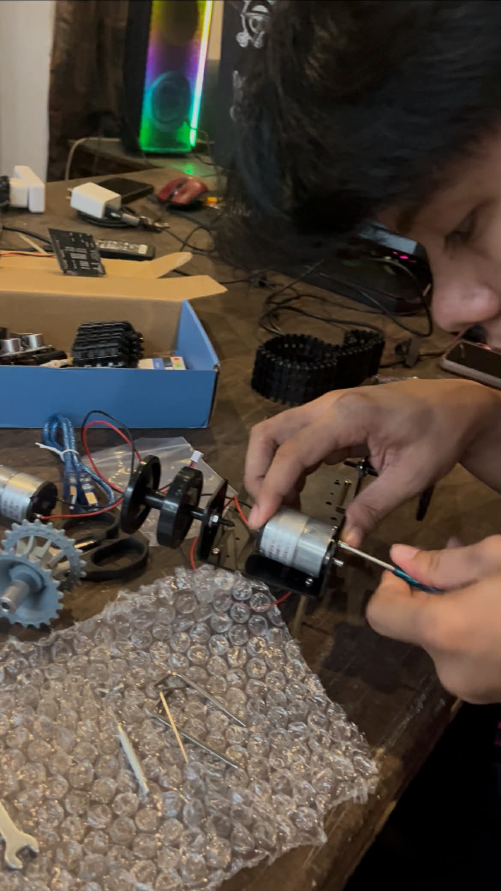
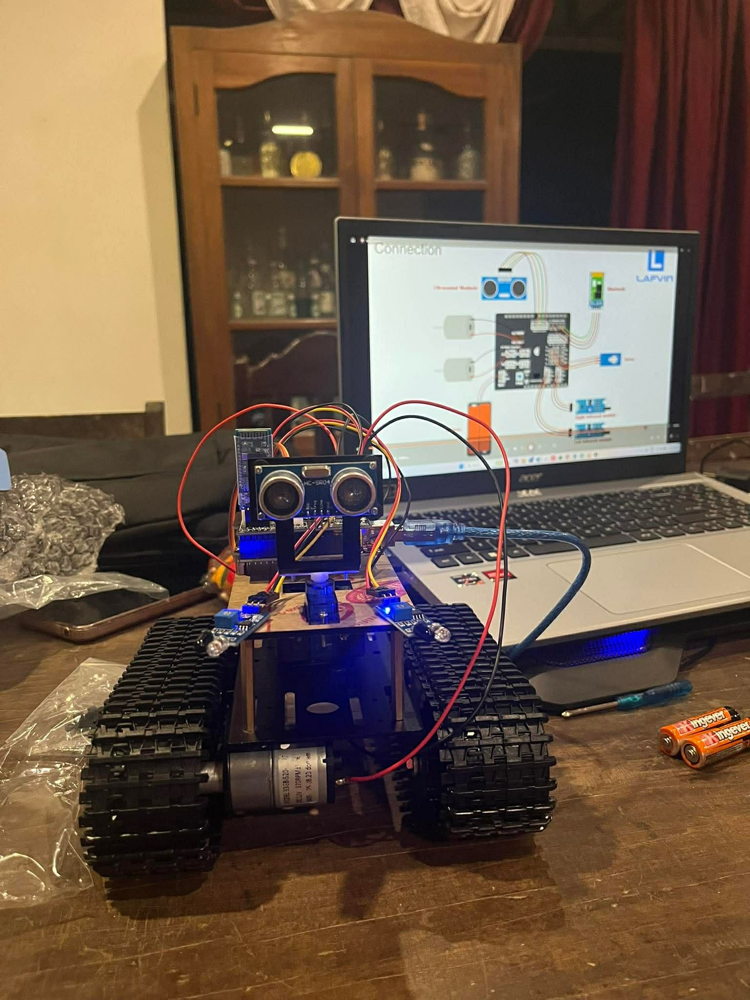
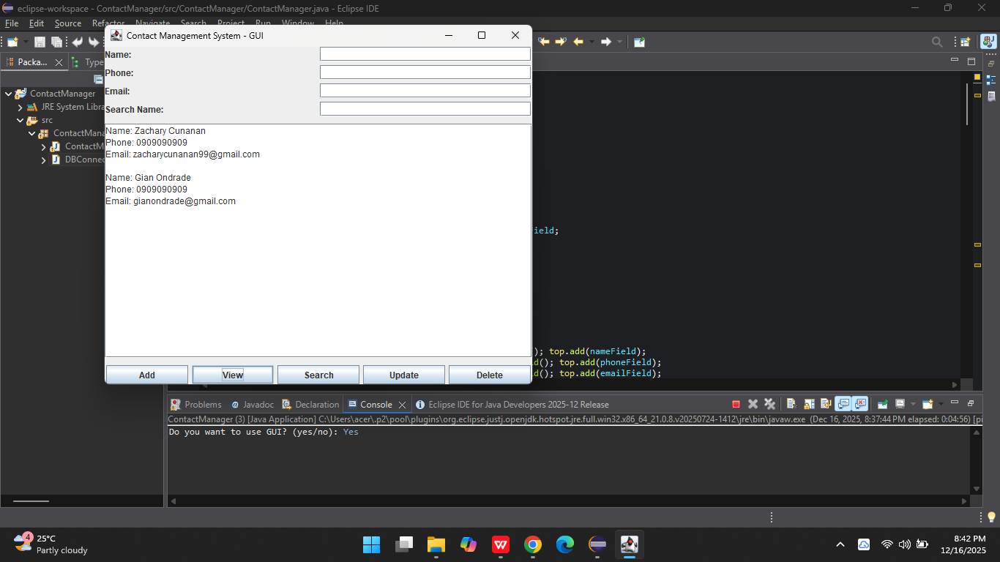
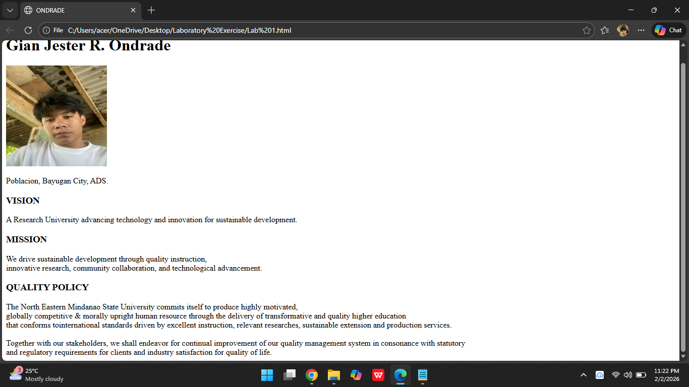
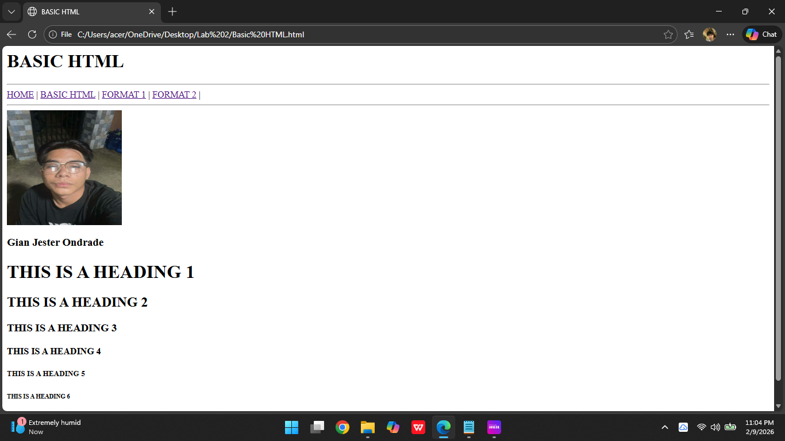

Hello! I'm Gian Jester R. Ondrade.

Creating an embedded system involves designing a small computer system that combines hardware and software to perform a specific task within a larger device.

An embedded system is developed by integrating a microcontroller, sensors, and programmed software to perform a specific function automatically.

The background shows the Eclipse IDE workspace, where the Java project files and code are being developed. This image demonstrates a desktop application with a graphical user interface (GUI) used for managing contact information.

HTML webpage displaying personal information. The page contains the name Gian Jester R. Ondrade at the top, indicating that the page represents a personal profile or introductory webpage.

Basic HTML webpage that demonstrates navigation links, an image, and the different HTML heading tags from h1 to h6.
Hi! My name is Gian.
I am currently studying Computer Science.
My skills include HTML, CSS, JavaScript.
I love designing websites and learning new technologies.
📧 Gmail: gianondrade@gmail.com
📱 Phone: 09090909090
🌐 Facebook: Gian Jester Ondrade